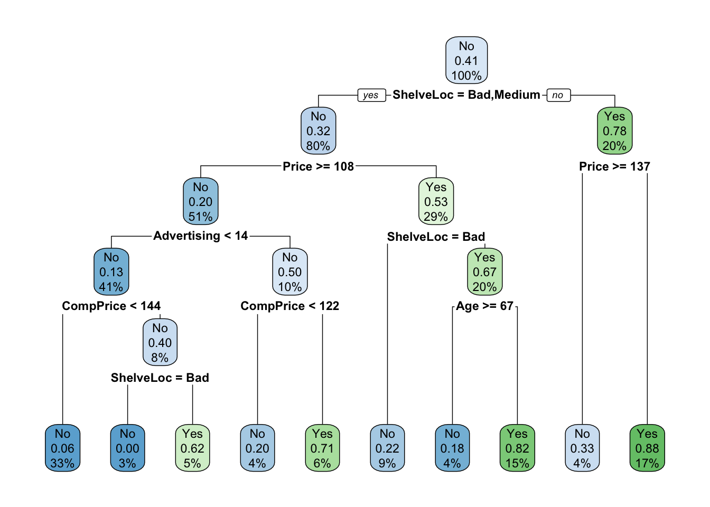
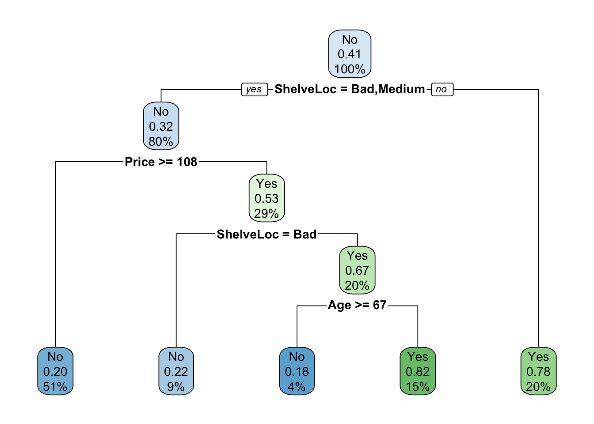

Classification
1 Overview
Classification is used on data where the response variable is qualitative (categorical), unlike regression which has a quantitative (continuous) response variable. The response categories are known making this a supervised learning technique, unlike clustering where the categories are unknown.
A common method to evaluate classification models is to calculate the accuracy: the proportion of correctly classified responses to the total number of classifications made. Other performance metrics are also useful, including sensitivity and specificity (explored with logistic regression).
Some common classification techniques include: logistic regression, Naive Bayes classifier, k-nearest neighbor, decision trees, linear/quadratic discriminant analysis (not explored here), and support vector machines (not explored here).
2 Logistic Regression
Logistic regression is used for binary classification - when there are 2 possible predictor classes.
Logistic regression assumes a linear relationship between the predictors variables and the log-odds of the event Y=1: \[log_b\frac{p}{1-p} = \beta_0 + \beta_1x_1 + \beta_2x_2\] where \(p = P(Y=1).\) We can solve for \(p\): \[p = \frac{b^{\beta_0 + \beta_1x_1 + \beta_2x_2}}{b^{\beta_0 + \beta_1x_1 + \beta_2x_2}+1} = \frac{1}{1+b^{-(\beta_0 + \beta_1x_1 + \beta_2x_2)}}\]
Generally \(e\) is chosen for the base \(b\), though other bases are possible. The regression coefficients are often found with a maximum likelihood estimation that requires an iterative process.
Assumptions: logistic regression requires the observations to be independent, little to no multicollinearity among independent variables, and linearity of independent variables and log odds.
2.1 Logistic Regression: Income Example
We want to predict if an individual will earn more than $50K using various predictors. This example was inspired by Logistic Regression Income
2.1.1 Train/Test Set
Load data:
incomeData <- read.table('adult.data', sep = ',', fill = F, strip.white = T)
colnames(incomeData) <- c('age', 'workclass', 'fnlwgt', 'education', 'education_num', 'marital_status', 'occupation', 'relationship', 'race', 'sex', 'capital_gain', 'capital_loss', 'hours_per_week', 'native_country', 'income')
incomeData$IncomeAbove50 = as.numeric(incomeData$income == '>50K')
table(incomeData$income)##
## <=50K >50K
## 24720 7841We see there are significantly more cases of <=50K than >50K. Because of this class bias, we will select our training data proportionately from each of these classes.
dataAbove = incomeData %>% filter(IncomeAbove50 == 1)
dataBelow = incomeData %>% filter(IncomeAbove50 == 0)
set.seed(123)
dataAbove_trainingRows = sample(1:nrow(dataAbove), 0.75*nrow(dataAbove))
dataBelow_trainingRows = sample(1:nrow(dataBelow), 0.75*nrow(dataBelow))
trainAbove = dataAbove[dataAbove_trainingRows,]
trainBelow = dataBelow[dataBelow_trainingRows,]
train = rbind(trainAbove, trainBelow)
testAbove = dataAbove[-dataAbove_trainingRows,]
testBelow = dataBelow[-dataBelow_trainingRows,]
test = rbind(testAbove, testBelow)
table(train$income)##
## <=50K >50K
## 18540 5880rm(dataAbove, dataBelow, dataAbove_trainingRows, dataBelow_trainingRows, trainAbove, trainBelow, testAbove, testBelow)We have a similar proportion of >50K to <=50K in our training data as in the full data set.
2.1.2 Fit and Test Logistic Model
I chose variables I thought would predict income, however different variable choices or variable selection methods could be used.
mod.logit = glm(IncomeAbove50 ~ age + workclass + education_num + sex + hours_per_week, data=train, family='binomial')
summary(mod.logit)##
## Call:
## glm(formula = IncomeAbove50 ~ age + workclass + education_num +
## sex + hours_per_week, family = "binomial", data = train)
##
## Deviance Residuals:
## Min 1Q Median 3Q Max
## -2.7015 -0.6631 -0.4058 -0.1008 3.2307
##
## Coefficients:
## Estimate Std. Error z value Pr(>|z|)
## (Intercept) -9.999517 0.173092 -57.770 < 2e-16 ***
## age 0.048093 0.001439 33.422 < 2e-16 ***
## workclassFederal-gov 1.238134 0.133968 9.242 < 2e-16 ***
## workclassLocal-gov 0.815840 0.119628 6.820 9.12e-12 ***
## workclassNever-worked -9.351303 201.406410 -0.046 0.962968
## workclassPrivate 0.871994 0.104582 8.338 < 2e-16 ***
## workclassSelf-emp-inc 1.374228 0.130409 10.538 < 2e-16 ***
## workclassSelf-emp-not-inc 0.431777 0.117644 3.670 0.000242 ***
## workclassState-gov 0.656341 0.132591 4.950 7.42e-07 ***
## workclassWithout-pay -11.954790 148.161877 -0.081 0.935691
## education_num 0.353197 0.007808 45.233 < 2e-16 ***
## sexMale 1.192198 0.044124 27.019 < 2e-16 ***
## hours_per_week 0.034253 0.001552 22.077 < 2e-16 ***
## ---
## Signif. codes: 0 '***' 0.001 '**' 0.01 '*' 0.05 '.' 0.1 ' ' 1
##
## (Dispersion parameter for binomial family taken to be 1)
##
## Null deviance: 26959 on 24419 degrees of freedom
## Residual deviance: 20733 on 24407 degrees of freedom
## AIC: 20759
##
## Number of Fisher Scoring iterations: 12Predict for the test data
predictedProbability = predict(mod.logit, test, type='response')
test$PredictedIncomeAbove50 = ifelse(predictedProbability > 0.5,1,0)
confusionMatrix(factor(test$PredictedIncomeAbove50), factor(test$IncomeAbove50), positive = '1')## Confusion Matrix and Statistics
##
## Reference
## Prediction 0 1
## 0 5768 1152
## 1 412 809
##
## Accuracy : 0.8079
## 95% CI : (0.7992, 0.8164)
## No Information Rate : 0.7591
## P-Value [Acc > NIR] : < 2.2e-16
##
## Kappa : 0.397
##
## Mcnemar's Test P-Value : < 2.2e-16
##
## Sensitivity : 0.41254
## Specificity : 0.93333
## Pos Pred Value : 0.66257
## Neg Pred Value : 0.83353
## Prevalence : 0.24088
## Detection Rate : 0.09937
## Detection Prevalence : 0.14998
## Balanced Accuracy : 0.67294
##
## 'Positive' Class : 1
## Our model predicts our test data with 81% accuracy where accuracy = \(\frac{TP + FN}{Total}\) Some other interesting metrics:
- Sensitivity: also called recall or true positive rate. Equal to \(\frac{TP}{TP + FN}\) where \(FN\) (Type II error) occurs when the model predicts a true value to be false
- Specificity: also called true negative rate. Equal to \(\frac{TN}{TN + FP}\) where \(FP\) (Type I error) occurs when the model predicts a false value to be true
Generally raising one of the metrics lowers the other (trade-off), the context of the data will determine which is more important.
The model prediction returns a probability of each observation having an income greater than 50K. Here, we classified observations with a probability > 0.5 to have an income greater than 50K, however different threshold values are possible.
2.1.3 ROC Curve
A receiver operating characteristic (ROC) curve plots the true positive rate (sensitivity) against the false positive rate (1 - specificity). This can also be viewed as the percent of positive outcomes versus the percent of other outcomes.
library(ROCR)
pred = prediction(predictedProbability, test$IncomeAbove50)
perf = performance(pred, measure = 'tpr', x.measure = 'fpr')
plot(perf)The curve will generally be above the line \(y=x\) and curves of “better” models are typically close to the upper left corner.
We can also calculate the area under the ROC curve (AUC)
auc = performance(pred, measure = "auc")
auc = auc@y.values[[1]]
auc## [1] 0.8195055“Better” models generally have AUC close to 1, though it’s important to consider many metrics when evaluating a model.
2.1.4 Model Assumptions
We can check for multicollinearity among our independent variables by computing the variance inflation factor (VIF). All the variables should have a VIF less than 10 but ideally less than 5.
vif(mod.logit)## GVIF Df GVIF^(1/(2*Df))
## age 1.102818 1 1.050151
## workclass 1.157198 8 1.009167
## education_num 1.047505 1 1.023477
## sex 1.039897 1 1.019753
## hours_per_week 1.074034 1 1.0363563 K-Nearest Neighbors (KNN)
KNN works by considering the K training data points that are closest (typically using Euclidean distance) to the test observation. Then, the test observation is predicted to be in the same class as the majority of the closest training points. In the event of a tie, one of the classes is randomly chosen. It is necessary to normalize (generally min-max normalization instead of standardization) the data first since we will be calculating distances.
3.1 KNN: Iris Example
This example was inspired by KNN Example. Normalize the iris data and split into a training and test set
normalize <- function(x) {
return((x - min(x)) / (max(x) - min(x)))
}
set.seed(123)
irisNormalized = as.data.frame(lapply(iris[,c(1,2,3,4)], normalize))
training_ind = sample(1:nrow(iris), 0.75 * nrow(iris))
train = irisNormalized[training_ind,]
test = irisNormalized[-training_ind,]
train_class = iris[training_ind,5]
test_class = iris[-training_ind,5]Now run knn function
library(class)
test_prediction = knn(train, test, cl=train_class, k=3)Calculate accuracy of test data
table(test_prediction, test_class)## test_class
## test_prediction setosa versicolor virginica
## setosa 12 0 0
## versicolor 0 16 1
## virginica 0 1 8mean(test_prediction == test_class)*100 #accuracy## [1] 94.73684Try a larger value of k (consider more neighbors)
test_prediction = knn(train, test, cl=train_class, k=11)
table(test_prediction, test_class)## test_class
## test_prediction setosa versicolor virginica
## setosa 12 0 0
## versicolor 0 16 0
## virginica 0 1 9mean(test_prediction == test_class)*100 #accuracy## [1] 97.36842In this case, a larger k increased the accuracy of the model, however this was inconsistent across different splits of the training and test sets. We could use cross-validation to test different values of k (and different train/test sets) to determine the optimal number of neighbors to use.
In general, a smaller value of k means noise in the data will have a higher influence on the boundary causing the boundary to be more flexible. A larger value of k will have smoother decision boundaries which may not pick up on some boundaries of the data, and is more computationally expensive.
A general rule is to choose \(k=\sqrt{N}\) where N is the number of samples in the training data.
4 Naive Bayes
Bayes theorem is given as: \[p(C_k|\textbf{x}) = \frac{p(C_k)p(\textbf{x}|C_k)}{p(\textbf{x})}\] where represents the features in the data, \(C_k\) is a possible class, and \(p(C_k|\textbf{x})\) is the probability of belonging to a class given the independent variables defined by . This is sometimes rewritten as \[\text{posterior} = \frac{\text{prior}\times \text{likelihood}}{\text{evidence}}\]
The denominator of the fraction is constant, and the numerator is equivalent to the joint probability model \(p(C_k,x_1,...,x_n)\).
If we assume all features in are mutually independent (this assumption is what makes it naive), we can rewrite Bayes theorem as \[p(C_k|x_1,...,x_n) \propto p(C_k) \prod_{i=1}^n p(x_i|C_k)\]
4.1 Naive Bayes Classifier
Assign a class label \(\hat{y} = C_k\) for some k where \[\hat{y} = \text{argmax}_{k \in \{1,...,K\}}p(C_k)\prod_{i=1}^n p(x_i|C_k)\]
4.2 Naive Bayes: Titanic Example
Naive Bayes is good to use when all the predictors are categorical, but can also be used on continuous predictors. It also works well when there are more than 2 classes to predict, unlike other classification methods (e.g. logistic regression). This example was inspired by Naive Bayes Blog Post
We try to predict if a passenger survived on the Titanic given the predictors: Class (1st, 2nd, 3rd, crew), Sex (M,F), and Age (child, adult).
data("Titanic")
Titanic = as.data.frame(Titanic)
#Data currently summary data, expand for analysis
repeating_sequence=rep.int(seq_len(nrow(Titanic)), Titanic$Freq)
Titanic_df=Titanic[repeating_sequence,]
Titanic_df = Titanic_df %>% select(-Freq)Fit Naive Bayes model
library(e1071)## Warning: package 'e1071' was built under R version 3.6.3mod.NB = naiveBayes(Survived~., data=Titanic_df)
mod.NB##
## Naive Bayes Classifier for Discrete Predictors
##
## Call:
## naiveBayes.default(x = X, y = Y, laplace = laplace)
##
## A-priori probabilities:
## Y
## No Yes
## 0.676965 0.323035
##
## Conditional probabilities:
## Class
## Y 1st 2nd 3rd Crew
## No 0.08187919 0.11208054 0.35436242 0.45167785
## Yes 0.28551336 0.16596343 0.25035162 0.29817159
##
## Sex
## Y Male Female
## No 0.91543624 0.08456376
## Yes 0.51617440 0.48382560
##
## Age
## Y Child Adult
## No 0.03489933 0.96510067
## Yes 0.08016878 0.91983122Make predictions and check accuracy
Titanic_df$PredictedSurvived = predict(mod.NB, Titanic_df)
table(Titanic_df$PredictedSurvived, Titanic_df$Survived)##
## No Yes
## No 1364 362
## Yes 126 349mean(Titanic_df$PredictedSurvived==Titanic_df$Survived)## [1] 0.7782826The model predicts if a passenger survives with about 77.8% accuracy.
4.3 Laplace Correction
Suppose there was a set of predictors with a 0 probability of one of the outcomes. For example, suppose none of the crew survived. Without any correction, our model will always predict a crew member will not survive, leaving no chance for an unforeseen circumstance.
missingData = unique(Titanic_df %>% filter(Class=='Crew', Survived=='Yes') %>% select(Class:Survived))
Titanic_df_Less = Titanic_df %>% select(Class:Survived) %>% anti_join(missingData, by = c('Class', 'Sex', 'Age', 'Survived'))
mod.NBNoLaplace = naiveBayes(Survived ~ ., data=Titanic_df_Less, laplace=0)
print(missingData[1,])## Class Sex Age Survived
## 1 Crew Male Adult Yespredict(mod.NBNoLaplace, missingData[1,], type="raw", threshold=0)## No Yes
## [1,] 1 NaNWe introduce the Laplace correction, which adds 1 (or whatever defined value) to all the classes. This forces all joint probabilities to be greater than 0 and allows a (sometimes small) possibility for all outcomes.
mod.NBLaplace = naiveBayes(Survived ~ ., data=Titanic_df_Less, laplace=1)
predict(mod.NBLaplace, missingData[1,], type="raw", threshold=0)## No Yes
## [1,] 0.9994807 0.0005192745 Classification Trees
Decision trees create a set of ‘questions’ to partition the data set. The questions are chosen to provide the ‘best split’, and result in a flow chart to determine the category. Content and examples for this section were taken from DataCamp Decision Tree Example
Terms:
- root node: starting node representing the entire population/sample
- decision node: a sub-node that splits into more sub-nodes
- terminal node/leaf: a sub-node that does not split
Decision trees are intuitive and easy to explain and visualize, but are not very robust as a small change in the data can drastically change the final tree.
5.1 How to Grow Trees
5.1.1 Classification
Classification trees use divide and conquer to create the most pure (homogeneous) partitions. A common way to build these trees is to use the Gini index. This is defined as \[G = \sum_{k=1}^K\hat{p}_{mk}(1-\hat{p}_{mk})\] where \(\hat{p}_{mk}\) is the proportion of training observations in the mth region that are from the kth class. The Gini index is a measure of total variance across the classes and is referred to as the nodes purity. The index will be small if the \(\hat{p}_{mk}\) are close to 0 or 1, and the split that produces the purest (largest G) will be chosen.
Other methods of growing classification decision trees include cross-entropy (similar to Gini index) and classification error rate (generally not sensitive enough for growing trees)
5.1.2 Regression
If our outcome variable were continuous, we could grow a regression tree. This uses Recursive Binary Splitting to minimize the Residual Sum of Squares (RSS), defined as \[\sum_{m=1}^M\sum_{i\in R_m}(y_i-\hat{y}_{R_m})^2\] where \(\hat{y}_{R_m}\) is the mean response for the training observations in the mth region/box. In short, this is a top-down greedy approach that starts at the top of the tree and successively splits the predictor space to minimize the RSS at each split. (More details could be added but this section is focused on classification trees).
5.1.3 Pruning Trees
We can pre-prune the trees by defining a maximum depth/number of levels, or by defining a minimum number of observations needed in a sub-node to continue partitioning.
We can also post-prune overly complicated branches when their reduction in error does not outweigh their added complexity.
5.2 Other Tree-Based Methods
The current methods of fitting our trees suffer from high variance, so different splits for the training/test sets can result in very different models. We briefly introduce 3 other methods of growing decision trees: Bagging, Random Forests, and Boosting.
Bagging (bootstrap aggregation)
Bagging randomly sample from the training data (with replacement) to split into multiple data sets, builds a decision tree classifier on each of them, then averages the resulting predictions.
While each tree has high variance but low bias, averaging multiple trees together reduces the variance.
Random Forests
This methods starts the same as bagging by splitting the training data. However, at each split a random subset of m predictors is chosen as a split candidate. If m equals the total number of predictors p, this method is equivalent to bagging.
Generally for classification problems \(m = \sqrt{p}\) and for regression problems \(m = p/3\) (rounded down).
Boosting
Boosting grows trees sequentially, where each tree is grown using information from previous trees. Given a current model, we fit a decision tree to the residuals from the model. This new trees is added into the fitted function to update the residuals. Boosting has three parameters: the number of tree, the shrinkage parameter (the rate at which boosting learns), and the number of splits in each tree.
5.3 Classification Tree: Carseat Sales Example
Our goal is to predict if the carseat sales are greater than 8000 units or not.
library(ISLR)
library(rpart)
set.seed(123) #rpart performs cross validation so we set our random number seed
carseats = Carseats
carseats$High = factor(ifelse(carseats$Sales<=8, "No", "Yes"))
mod.tree = rpart(High~.-Sales, data=carseats) #could alternatively use tree
#summary(mod.tree)
mod.tree$cptable## CP nsplit rel error xerror xstd
## 1 0.28658537 0 1.0000000 1.0000000 0.05997967
## 2 0.10975610 1 0.7134146 0.7134146 0.05547692
## 3 0.04573171 2 0.6036585 0.6524390 0.05398236
## 4 0.03658537 4 0.5121951 0.6402439 0.05365767
## 5 0.02743902 5 0.4756098 0.6341463 0.05349198
## 6 0.02439024 7 0.4207317 0.6524390 0.05398236
## 7 0.01219512 8 0.3963415 0.6341463 0.05349198
## 8 0.01000000 10 0.3719512 0.5609756 0.05132104mod.tree$variable.importance## Price ShelveLoc Age Advertising CompPrice Income Population Education US
## 39.3458304 28.9918954 13.0761815 12.7110483 10.2253806 6.2611750 3.1669718 0.9670985 0.1411614We can also visualize this tree:
library(rpart.plot)
rpart.plot(mod.tree, type=4, extra=1)
5.3.1 Making Predictions
Split into a training and test set and calculate accuracy
set.seed(123)
train = sample(1:nrow(carseats), 250)
mod.treeTrain = rpart(High~.-Sales, carseats, subset=train)
rpart.plot(mod.treeTrain)
Now predict the class for the test set
test = carseats[-train,]
test$predicted = predict(mod.treeTrain, test, type='class')
table(test$High, test$predicted)##
## No Yes
## No 63 26
## Yes 17 44mean(test$High == test$predicted) #accuracy## [1] 0.7133333Pruning Tree
Pre-Pruning: This stops the growth of a tree depending on a given maximum size of the tree or a minimum number of observations needed in a sub-node to split.
Make a tree with maximum depth = 3
mod.treeDepth = rpart(High~.-Sales, carseats, subset=train, method='class', control=rpart.control(maxdepth=3))
rpart.plot(mod.treeDepth)test$predicted = predict(mod.treeDepth, test, type='class')
mean(test$High == test$predicted) #accuracy## [1] 0.7066667There is a small reduction in accuracy for this simpler model compared to the previous model.
Only split a sub-node if it contains at least 30 observations
mod.treeObserve = rpart(High~.-Sales, carseats, subset=train, method='class', control=rpart.control(minsplit=30))
rpart.plot(mod.treeObserve)test$predicted = predict(mod.treeObserve, test, type='class')
mean(test$High == test$predicted) #accuracy## [1] 0.7333333This model has similar accuracy to the un-pruned model, but is a less complicated tree.
Post-Pruning: Here we grow a large tree then prune to balance error and complexity. Choose the left most value of complexity plot that lies below the line for the cp cutoff.
set.seed(123)
mod.treeComplex = rpart(High~.-Sales, carseats, subset=train, method='class', control=rpart.control(cp=0))
rpart.plot(mod.treeComplex)
plotcp(mod.treeComplex)mod.treeComplexPruned = prune(mod.treeComplex, cp=0.044)
rpart.plot(mod.treeComplexPruned)
test$predicted = predict(mod.treeComplexPruned, test, type='class')
mean(test$High == test$predicted) #accuracy## [1] 0.7133333Despite being a simpler tree, this model still has similar accuracy to the full model.
5.4 Regression Tree: Random Forest Housing Example
library(MASS)
library(randomForest)
boston = Boston
set.seed(101)
train = sample(1:nrow(boston), 300)
mod.rf = randomForest(medv~., data = boston, subset = train)
mod.rf##
## Call:
## randomForest(formula = medv ~ ., data = boston, subset = train)
## Type of random forest: regression
## Number of trees: 500
## No. of variables tried at each split: 4
##
## Mean of squared residuals: 12.68651
## % Var explained: 83.45The randomForest function defaults to growing 500 trees (ntree) and using floor(ncol(data)/3) variables (mtry) at each split.
5.4.1 Varying the Number of Variables
Fit a random forest model with a variable mtry, calculate the out-of-bag error (based on training set) and the test error:
oob.err = double(13)
test.err = double(13)
for (mtry in 1:13){
mod.fit = randomForest(medv~., data=boston, subset=train, mtry=mtry, ntree=350)
oob.err[mtry] = mod.fit$mse[350]
pred = predict(mod.fit, boston[-train,])
test.err[mtry] = with(boston[-train,], mean( (medv-pred)^2 ))
}library(ggplot2)
mtryData = data.frame(mtry = 1:mtry, test.err, oob.err) %>% pivot_longer(-mtry, names_to = 'ErrorType', values_to = 'Error')
ggplot(mtryData, aes(mtry, Error, color=ErrorType)) + geom_point() + geom_line() + theme(legend.position = c(0.9, 0.8))Mtry around 4 seems to be the most optimal choice, which is equivalent to floor(13/3), the default choice for mtry.